NURSE SHIFT PLANNER
管理者支援システム Ver0.5 取扱説明書
この説明書は、現在のコードで確認できる実装済み機能に基づいて作成しています。
1. アプリ概要
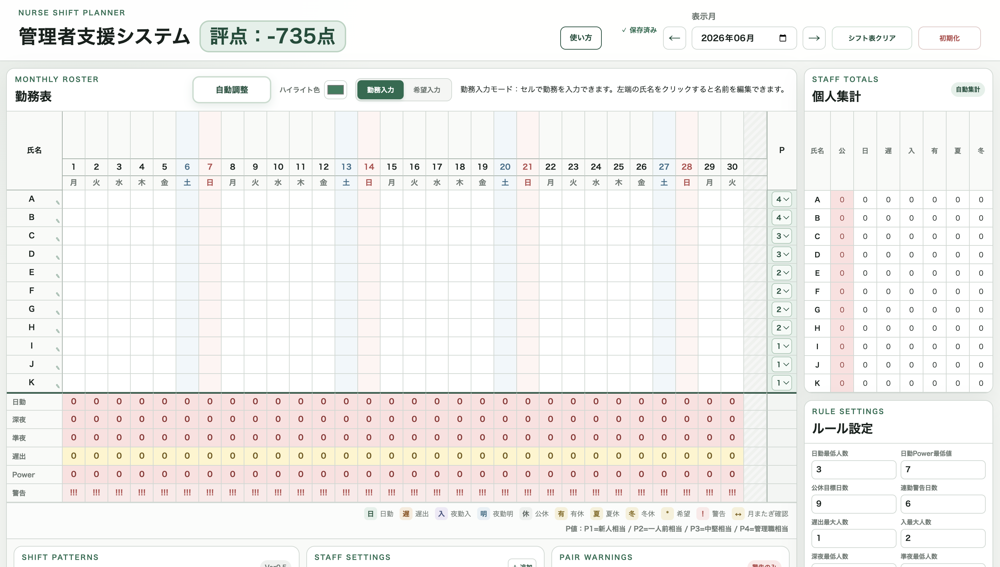
「管理者支援システム Ver0.5」は、看護師などの勤務表作成を支援するローカルWebアプリです。 勤務を自動で完成させるソフトではなく、勤務記号や登録済みパターンを配置しながら、勤務表のたたき台を作るためのツールです。
勤務入力、希望入力、パターン管理、自動配置、自動調整、警告表示、評点、日別集計、個人集計、NGペア設定などを利用できます。 データはブラウザの localStorage に自動保存されます。
2. 画面構成
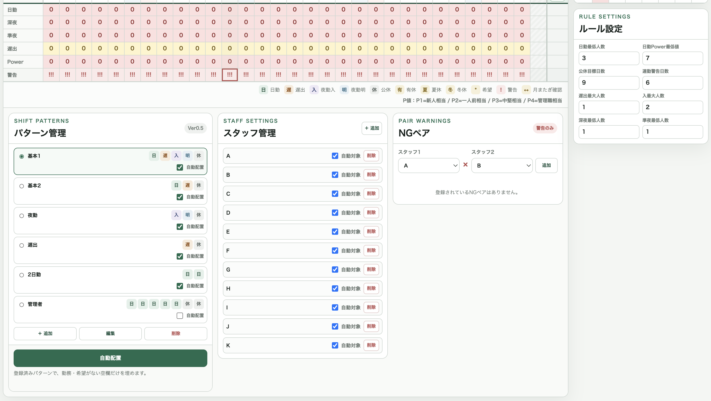
- 上部ヘッダー：アプリ名、評点、P値凡例、保存状態、月変更、シフト表クリア、初期化
- 勤務表エリア：行事予定、日付、曜日、スタッフ別勤務表、日別集計、警告行
- 勤務表操作エリア：自動調整、ハイライト色、勤務入力／希望入力の切り替え
- 勤務表下の設定エリア：パターン管理、スタッフ管理、NGペア
- 右側パネル：個人集計、ルール設定
3. 勤務入力モードの使い方
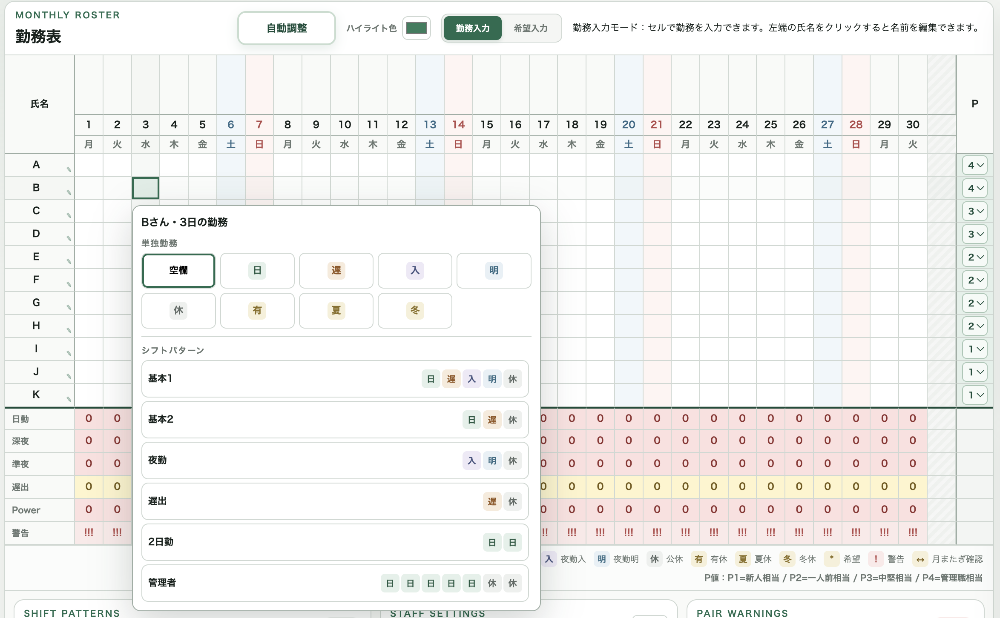
「勤務入力」を選び、勤務セルをクリックすると勤務選択メニューが表示されます。 単独勤務として、空欄、日、遅、入、明、休、有、夏、冬を入力できます。
同じメニューから登録済みパターンも選べます。パターンを選ぶと、クリックしたスタッフ・クリックした日付を開始位置として配置されます。
4. 希望入力モードの使い方
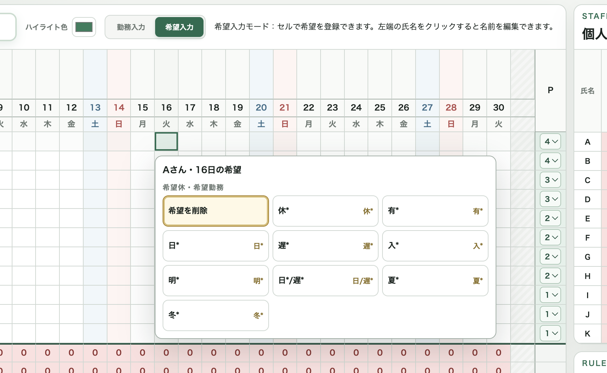
「希望入力」を選び、勤務セルをクリックすると希望入力メニューが表示されます。 希望を削除、休、有、日、遅、入、明、日/遅、夏、冬を選べます。
希望が入っているセルは * 付きで表示されます。希望と違う勤務を入力しようとすると変更されません。
パターン配置でも、希望と合わないセルは上書きされません。
5. スタッフ名・P値の編集方法
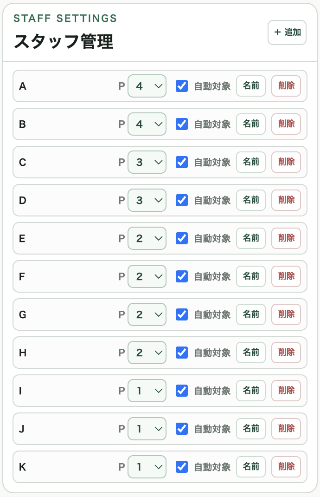
スタッフ名はスタッフ管理の「名前」ボタンから編集します。P値はスタッフ管理内のP欄で選択します。勤務表右端のP列は表示専用です。 P1は新人相当、P2は一人前相当、P3は中堅相当、P4は管理職相当です。
6. スタッフ追加・削除の方法
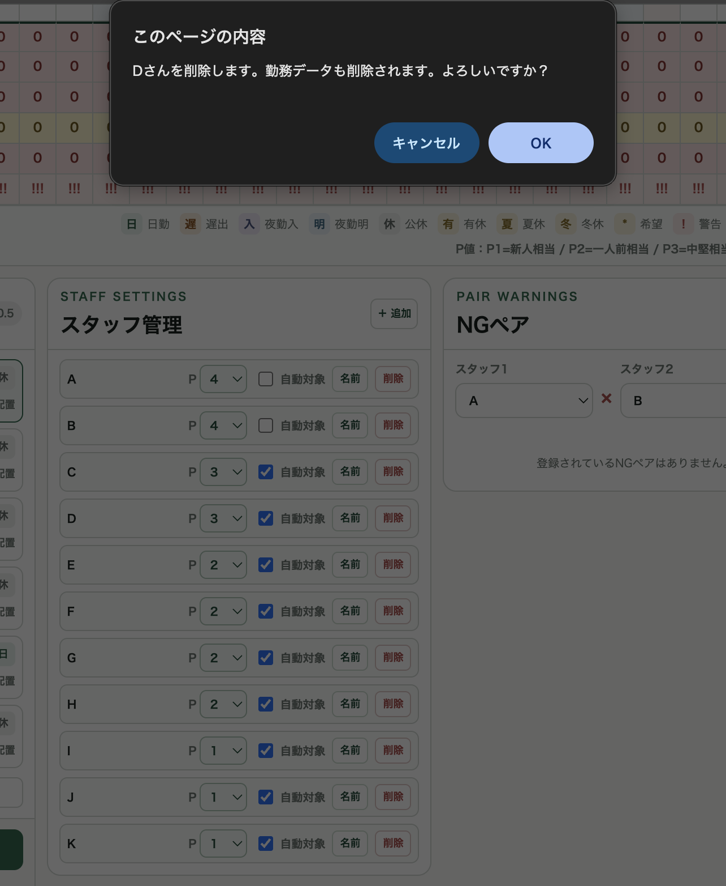
勤務表下の「スタッフ管理」で「＋ 追加」を押すと、氏名「新規スタッフ」、P値1、自動対象ONのスタッフが追加されます。 削除ボタンを押すと確認ダイアログが表示され、OKすると勤務データ、希望データ、NGペア設定からも削除されます。
7. 自動配置の使い方
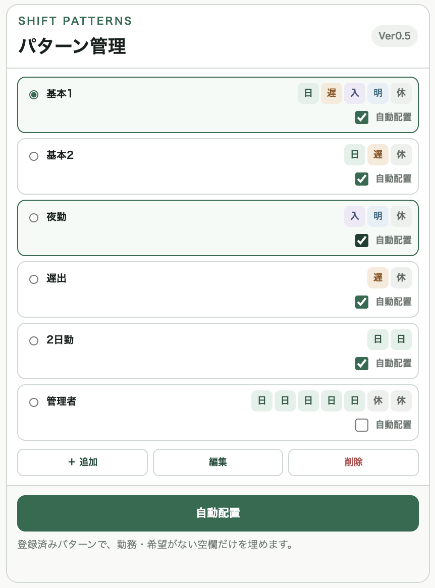
「自動配置」は、登録済みパターンを使い、勤務と希望が入っていない空欄セルを埋めます。 対象になるのは、スタッフ管理で「自動対象」がONのスタッフです。
パターン管理で「自動配置」にチェックが入っているパターンだけが使用されます。
8. 自動調整の使い方
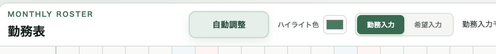
「自動調整」は、現在の勤務表をもとに、評点が上がる小さな変更を試す機能です。 スコアが改善する変更だけを採用します。希望入力があるセル、有休、夏休、冬休は変更しません。
9. パターン管理の使い方
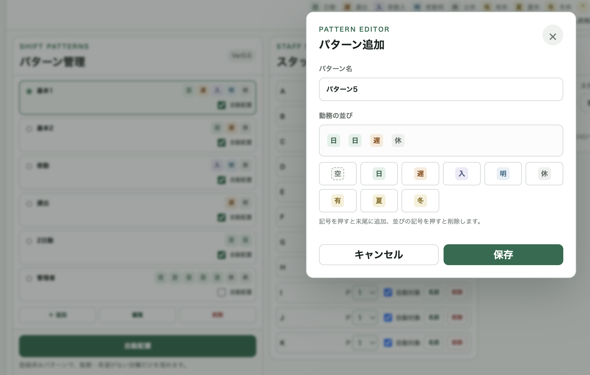
パターン管理では、シフトパターンを追加・編集・削除できます。 初期パターンは、基本1、基本2、夜勤、遅出、2日勤、管理者です。 パターンには空欄も含めることができます。
10. スタッフ管理の使い方
スタッフ管理では、スタッフ追加、削除、自動対象のON/OFFを設定できます。 自動対象OFFのスタッフは自動配置・自動調整で変更されませんが、集計や警告には含まれます。
11. NGペア設定の使い方
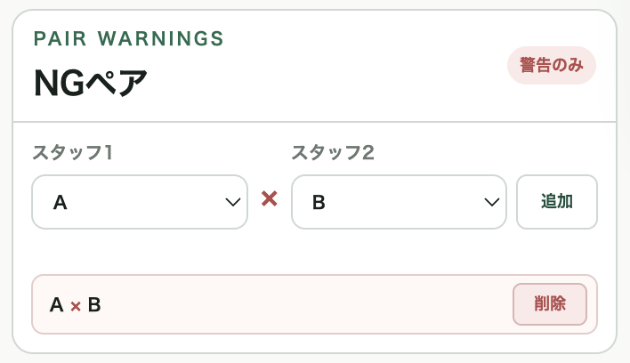
NGペアは、同じ勤務にしたくないスタッフの組み合わせを警告する機能です。 両方が同じ日に日勤、または両方が同じ日に夜勤入りの場合に警告します。 配置禁止ではありません。
12. 行事予定欄の使い方
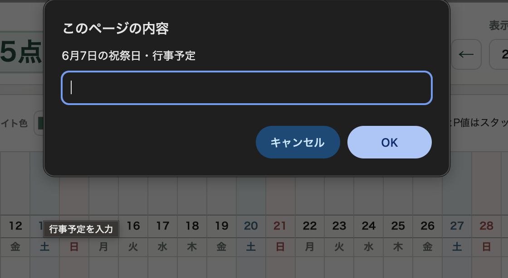
日付行の上にある行事予定欄をクリックすると、その日の祝祭日・行事予定を入力できます。 入力した内容は縦書きで表示され、自動保存されます。 行事予定はメモ機能であり、警告や評点には影響しません。
13. 評点の見方
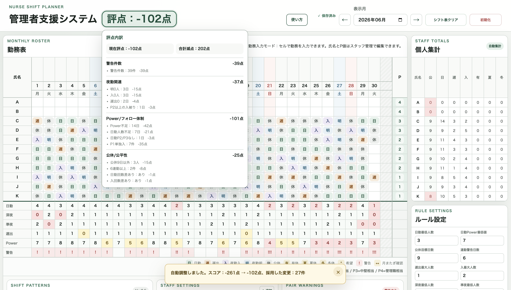
評点は100点から減点する方式です。0点未満のマイナス点も表示されます。 警告件数、夜勤関連、公休や公平性、Power不足、NGペアなどが反映されます。
評点部分にカーソルを合わせる、またはクリック／タップすると、減点内訳が表示されます。 分類は、警告件数、夜勤関連、Power/フォロー体制、公休/公平性、NGペアです。
14. 警告表示の見方
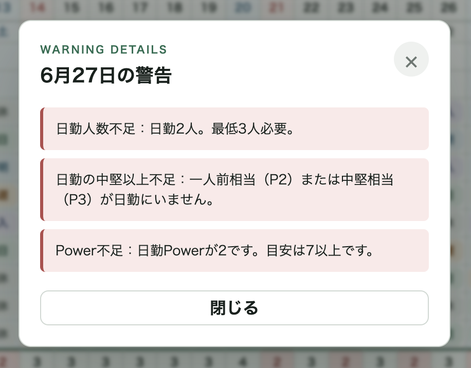
警告行には警告数に応じて !、!!、!!! が表示されます。
クリックすると、その日の警告詳細を確認できます。
15. 月またぎ確認の見方
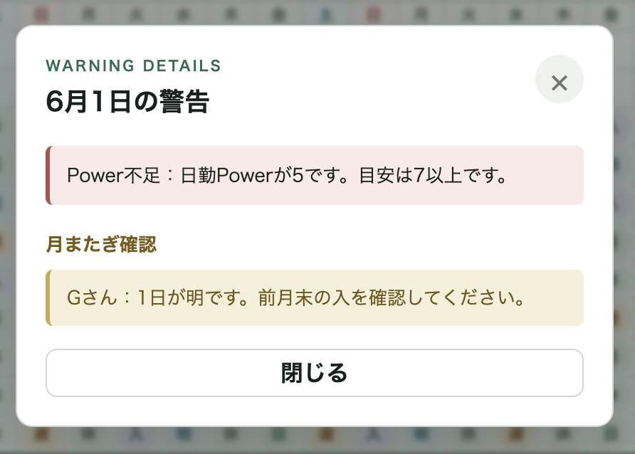
月初や月末で前月・翌月の勤務が必要になる場合は、通常警告ではなく ↔ の月またぎ確認として表示されます。
月またぎ確認は評点の減点対象ではありません。
16. 日別集計・個人集計の見方
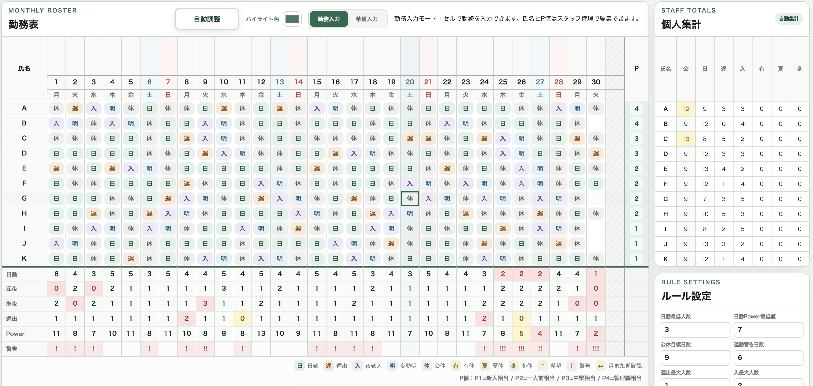
日別集計には、日勤、深夜、準夜、遅出、Power、警告が表示されます。 個人集計には、公、日、遅、入、有、夏、冬が表示されます。 0の場合も0として表示されます。
17. ルール設定の使い方
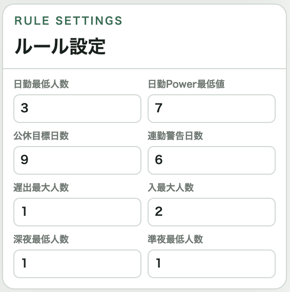
ルール設定では、日勤最低人数、日勤Power最低値、公休目標日数、連勤警告日数、遅出最大人数、 入最大人数、深夜最低人数、準夜最低人数を変更できます。変更は警告、集計色、評点に反映されます。
18. ハイライト色設定の使い方
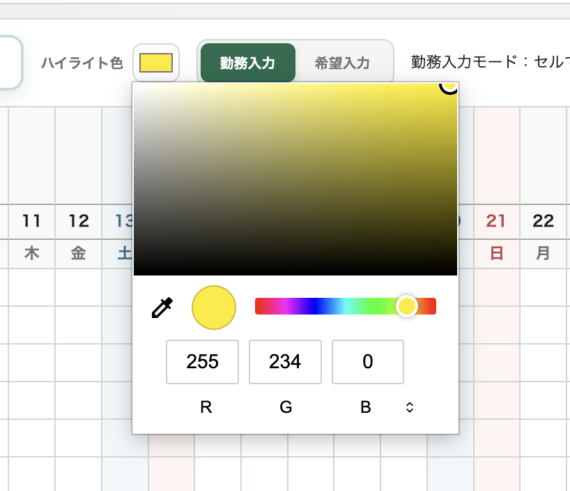
ハイライト色では、勤務表上でマウスを合わせた行・列の十字ハイライト色を変更できます。 変更した色は自動保存されます。
19. シフト表クリアと初期化の違い
シフト表クリアは、現在表示している月の勤務データだけを空欄にします。 希望、パターン、スタッフ、P値、NGペア、行事予定、ルール設定は残ります。
初期化は localStorage の保存データを削除し、初期状態に戻します。
20. localStorage保存について
このアプリは保存ボタンを使わず、操作時に自動保存します。 保存先は使用中のブラウザの localStorage です。 ブラウザや端末を変更すると保存データは共有されません。
21. 注意事項・免責
このアプリは勤務表作成を支援するためのツールです。 警告や評点は確認を補助する表示であり、勤務表の内容を保証するものではありません。 最終的な勤務可否や運用ルールへの適合は、必ず利用者が確認してください。
実装済み機能一覧
- 月表示変更、勤務入力、希望入力、希望保護
- 勤務セルからのパターン配置、パターン追加・編集・削除
- 自動配置、自動調整、スタッフ追加・削除、自動対象設定
- NGペア、行事予定、日別集計、個人集計、警告、月またぎ確認
- 評点、減点内訳、ルール設定、ハイライト色、自動保存
今後追加予定にできそうな機能一覧
- Excel読込、CSV出力、印刷用レイアウト
- クラウド保存、ログイン、複数端末同期
- 希望休一覧、行事予定に応じた基準変更
- 自動配置ロジックの高度化、夜勤セット作成の高度化
- バックアップ・復元、スタッフ並び替え、勤務表コピー、出力機能
短い紹介文
「管理者支援システム」は、勤務表作成時の入力・確認・調整を支援するWebアプリです。 勤務記号やシフトパターンを配置しながら、希望勤務、警告、集計、評点を確認できます。 自動配置と自動調整により、空欄を埋めるたたき台作成やスコア改善を補助し、最終確認は管理者が行えるよう設計されています。